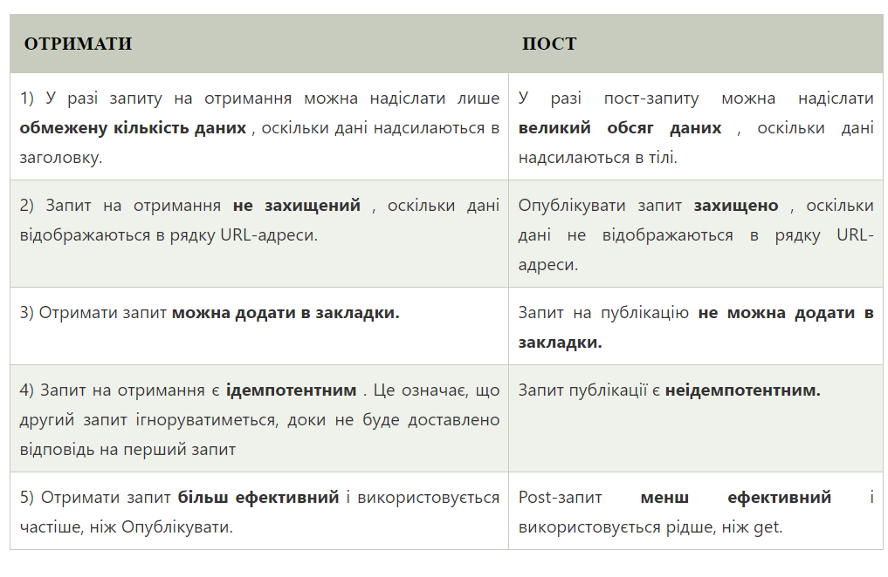
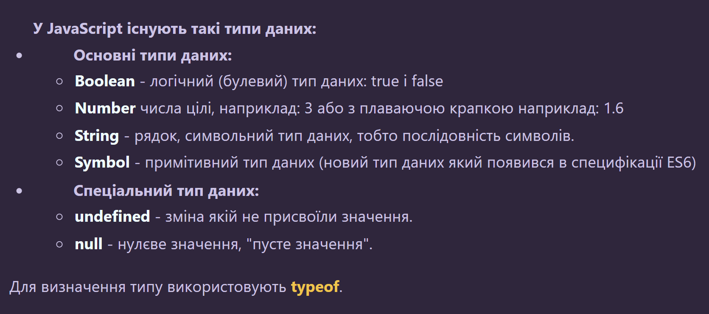
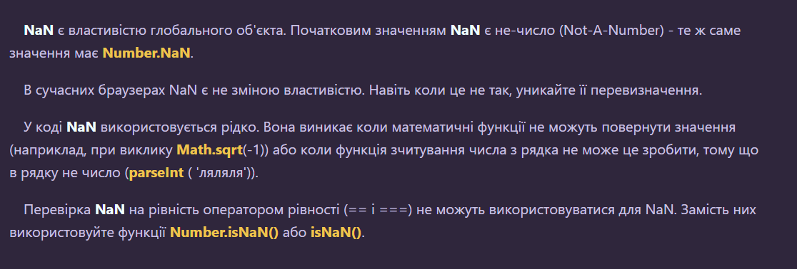
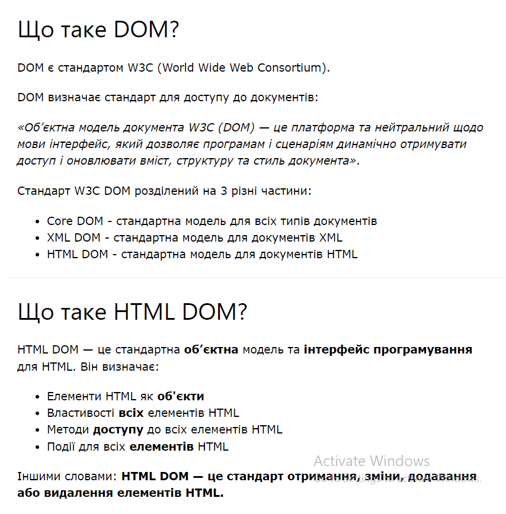
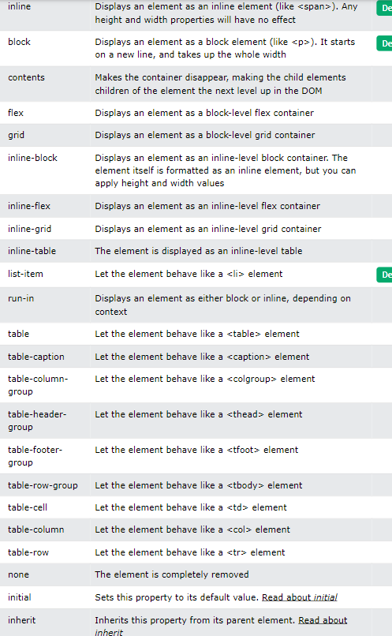
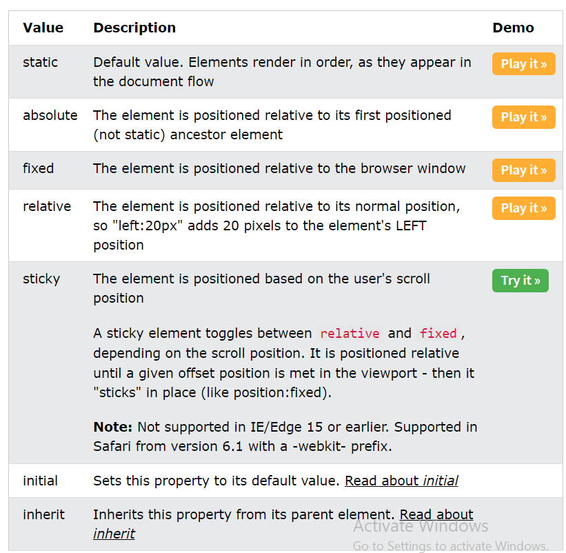

Загальні
- -
- -
- -
- -
- -
- -
- -
- -
- -
- -
- -
- -
- -
- Get/Post : 
JS Core
- 
- isArray() метод об'єкту Array який повертає true, якщо об'єкт є масивом і false якщо він масивом не є.
- Функція повертає true, якщо число є цілим. Якщо в числі присутня дробова частина, то функція повертає false
- 
- На відміну від глобальної функції isNaN(), Number. isNaN() не має проблеми примусового перетворення параметра в число. Це означає, що в нього безпечно передавати значення, які зазвичай перетворюються в NaN, але насправді NaN не є.
- Оголошення var мають глобальну область видимості або область функції, тоді як let і const мають блокову область видимості. Змінні var можна оновити та переголосити в межах їхньої області; змінні let можна оновити, але не переголосити; змінні const не можна ні оновити, ні переголосити.
- answer
- Деструктуризація — поділ складної структури на прості частини. У JavaScript ця складна структура, як правило, є об'єктом або масивом. Використовуючи синтаксис деструктуризації ви можете отримати менші фрагменти з масивів і об'єктів. Синтаксис деструктуризації можна використовувати для оголошення або присвоєння змінної.
video
- Для цього існує два методи: setTimeout дозволяє нам запускати функцію один раз через певний інтервал часу. setInterval дозволяє нам запускати функцію багаторазово, починаючи через певний інтервал часу, а потім постійно повторюючи у цьому інтервалі.
- Асинхронність : answer
- answer
- answer
video
- answer
- answer
- Глибока копія об'єкта : video
- A function expression is very similar to and has almost the same syntax as a function declaration (see function statement for details). The main difference between a function expression and a function declaration is the function name, which can be omitted in function expressions to create anonymous functions.
- for - перебирає блок коду кілька разів
for/in - переглядає властивості об'єкта
for/of - перебирає значення ітерованого об'єкта
while - проходить блок коду, поки задана умова виконується
do/while - також циклічно переглядає блок коду, поки задана умова виконується
- Основна відмінність між інструкцією break і continue у C полягає в тому, що оператор break призводить до негайного виходу з самого внутрішнього перемикача або замкнутого циклу. З іншого боку, оператор continue починає наступну ітерацію циклу while, охоплюючи for або do.
- 
HTML і CSS
- The span tag is an inline container used to mark up a part of a text, or a part of a document. The span tag is easily styled by CSS or manipulated with JavaScript using the class or id attribute. The span tag is much like the div element, but div is a block-level element and span is an inline element.
- Властиіості display : 
- Властивості position : 
- ПСЕВДНОЕЛЕМЕНТИ : ::first-line; ::first-letter; ::before; ::after; ::marker; ::selection
- ПСЕВДОКЛАСИ : :hover; :active; :visited; :first-cild; :lang; :checked; first-of-type; :nth-child(n); only-of-type; ...
- -
- CSS Flexbox — це модель макета, яка дозволяє ефективно та динамічно розташовувати елементи. Цей макет є одновимірним і дозволяє розміщувати елементи всередині контейнера з рівномірно розподіленим простором.
Цей макет робить елементи адаптивними, що означає, що елементи змінюють свою поведінку відповідно до типу пристрою, який їх відображає. Це робить елементи гнучкими та забезпечує їм відповідне положення та симетрію.
- -
- CSS препроцесор – це програма, яка компілює написаний код(з використанням спец. синтаксису) в чистий CSS код. При цьому, препроцесор надає розробнику нові можливості та функції video
- У CSS термін «коробкова модель» використовується, коли йдеться про дизайн і макет.
Модель коробки CSS – це, по суті, коробка, яка обертається навколо кожного елемента HTML. Він складається з полів, рамок, відступів і фактичного вмісту. Коробкова модель дозволяє додавати межі навколо елементів і визначати простір між елементами.
- how to center div --> answer
- float vs flex vs grid --> answer
- префікси css --> answer
- кросбраузерні стилі --> answer (читай знизу)
- семантика --> answer